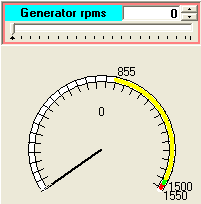
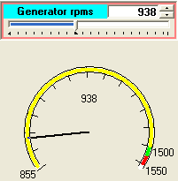
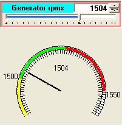
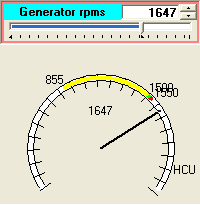

The Rotor is the piece that connects the Hub to the gearbox. Its most critical part is the bearing situated near the Hub, as this element must support the weight and the efforts of the Blades and the Hub (tons).
The controller monitors the temperature of this bearing.. In modern wind turbines this bearing is also monitored using "condition monitoring" systems. Those systems include accelerometers placed on the bearing so that they can measure its axial vibrations and displacements.
In the DriveTrain synoptic contains a widget associated with the temperature of the rotor's bearing. The trainee may change its value and observe the reaction of the Controller.
The circular meters has adaptive representation. The purpose is to present the actual value of the Generator rpms in the appropriate context. So, during runup, going to cutin it presents the full range from 0 to Synchronous speed.
|
 |
 |
 |
 |
The yellow zone indicates (approx.) the controlled runup approaching cutin.
When then rpms enter the yellow zone, the start value of the representation changes, as well as the tics. See next figure.
Finally, while in production small variations of rpms means big changes of the generated power, so a finer degree of detail is needed. See next figure.Red zone indicated out of recommended rpms range.
In order to be able to observe the reaction of the Nacelle to the (hopefully infrequent) situation of the generator running at much higher speed that expected (HCU limit: High speed Centrifugal Unit fires), this circular meter jumps to a different view when approaching that value. See next figure.